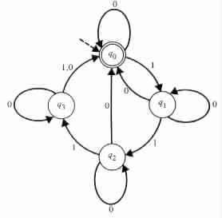
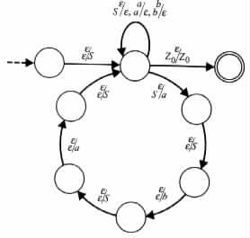
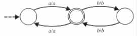
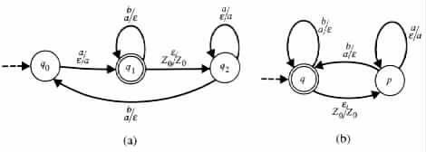

xrev }
xrev }- { (aibj, ajbi) | i, j ³ 0 }
- { (x, aibj) | x is in {a, b}*, i = (number of a's in x), and j = (number of b's in x) }
- { (xyz, xyrevz) | xyz is in {a, b}* }
- { (aibj, ck) | i £ k £ j }
- { (aibj, ck) | k = min(i, j) }
- { (w, ck) | w is in {a, b}*, and k = min(number of a's in w, number of b's in w) }
- { (xy, yxrev) | x and y are in {a, b}* }
- { (x, xrevx) | x is in {a, b}* }
- { (x, y) | x and y are in {a, b}*, and y is a permutation of x }
|
 y then /* I5 */
call RP(x) /* I6 */
write y /* I7 */
return /* I8 */
end
y then /* I5 */
call RP(x) /* I6 */
write y /* I7 */
return /* I8 */
end - { vwwrev | v and w are in {a, b}*, and |w| > 0 }
- { x | x is in {a, b}* and each prefix of x has at least as many a's as b's }
- { aibjajbi | i, j > 0 }
- { w | w is in {a, b}*, and w
 wrev }
wrev }
- { xxrev | x is accepted by the finite-state automaton of Figure 3.E.2 }
Figure 3.E.2
- { x | x = xrev and x is accepted by the finite-state automaton of Figure 3.E.2 }
 j or j
j or j k }
k }
 y }
y }|
|
|
 |
Find a context-free grammar that generates L(M).
- { anblct | t > l > n > 0 }
- { aareva | a is in {a, b}* }
- { abarevbrev | a and b are in {a, b}* }
- { anaana | a is in {a, b}*, and n = (the number of a's in a) }
- { a#b | a and b are in {a, b}* and b is a permutation of a }
- { ab | The finite-state transducer whose transition diagram is given in
Figure 3.E.6
Figure 3.E.6
has output b on input a } - { an! | n ³ 1 }
|
 |